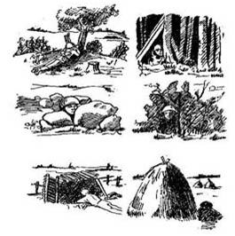

ВОГНЕВА ПІДГОТОВКА
Розвідка цілей спостереженням, визначення дальності до цілі та цілевказівки
Спостереження за полем бою
Спостереження э одним з найпоширеніших способів ведення розвідки противника й місцевості. Спостереження організовується у всих видах бойової діяльності військ і ведеться беззупинно вдень і вночі. В умовах обмеженої видимості спостереження ведеться із застосуванням приладів нічного бачення й інших технічних засобів, засобів освітлення місцевості й доповнюється підслуховуванням.
Мета спостереження - своєчасне виявлення:
- розташування тобто напрям на ціль та відстань до неї,
- якості – піхота,техніка тощо,
- кількості
- і характеру дій противника.
Тобто розташування його вогневих засобів, бойової техніки, пунктів управління, інженерних загороджень та інші відомості. Крім того, у бою необхідно спостерігати за сигналами командирів, за діями своїх сусідів і за результатами свого вогню
Спостереження ведеться спостерігачами зі спостережних постів і командно-спостережних пунктів.
Кожен солдат зобов’язаний постійно вести спостереження за полем бою, тобто за противником і місцевістю, добути важливі відомості про характер його дій.
Навіть якщо ви задіяні в господарчих роботах ви тим не менш приймаєте участь в розвідці. Солдат, що рубав дрова і почув звук безпілотника має по можливості доповісти - таким чином він теж приймає участь в спостереженні. Солдат вийшов, вибачте, поссать і побачив дим неважливо в зоні відповідальності взводу чи ні - по можливості має доповісти. Іноді інформація може здаватися неважливою для вас, але тим не менш про всі нові явища і події заведіть за звичку по-перше доповідати старшому начальникові, по-друге ділитись з іншими військовослужбовцями вашого підрозділу, особливо при передачі зміни на спостережному пості. Старайтесь фіксувати все незвичайне (записуйте в журнал спостереження).
Дуже вирізняються підрозділи в яких навіть солдати володіють тактичною обстановкою на рівні роти (вогневі позиції противника, місця стику із сусідами, смуги вогню сусідів і т.д.). На жаль це не часте явище в силу багатьох обставин. Старайтесь якомога частіше цікавитись в свого командира що нового відбувається в батальйоні в тактичному плані (нові позиції наші і противника і т.п.). Бо так виходить досить часто, що військовослужбовці знають всю інформацію за нових поваріх на батальйоні та їх тактико-технічні характеристики, а при питаннях, що стосуються тактичної обстановки плавають.
Спостерігач зобов’язаний:
-вміти вибирати, обладнувати й маскувати місце для спостереження, орієнтуватися на місцевості в будь-яку пору року й час доби;
- визначати відстань до цілей (об’єктів), користуватися приладами спостереження і засобами зв’язку;
- знати розвідувальні ознаки основних видів озброєння й бойової техніки противника, чітко доповідати про результати спостереження командирові.
Організація спостереження.
Для виконання завдання спостерігача забезпечують штатними приладами спостереження та зв’язку.
Як правило завдання ставиться спостерігачеві на місцевості, звідки буде вестися спостереження. При постановці завдання спостерігачеві вказуються:
- Орієнтири й умовні найменування місцевих предметів;
- Відомості про противника і свої підрозділи;
- Місце для спостереження;
- Сектор (смуга), район (об’єкт) спостереження, за чим спостерігати й на що звернути особливу увагу;
- Напрямок ймовірного підльоту літаків (вертольотів) противника;
- Порядок доповіді результатів спостереження, сигнали оповіщення.
Місце спостереження
Ефективність спостереження в значній мірі залежить від уміння вибрати і обладнати місце для спостереження з таким розрахунком, щоб воно забезпечувало гарний огляд, маскування і захист від ураження вогневими засобами. Треба пам’ятати при маскуванні спостережних пунктів
, що спостерігачі противника ведуть облік кожного помітного місцевого предмета, тому поява нового «стогу» або «пня» може викликати в них підозру й підсилення спостереження. Спостерігач має бачити усе, а сам залишатись непоміченим.
На відкритому місці спостерігач обирає місце для спостереження з таким розрахунком, щоб забарвлення його одягу й озброєння зливалися із природним забарвленням місцевості. При розташуванні біля місцевих предметів (дерево, кущ, камінь тощо) спостереження необхідно вести лежачи, розташовуючись з тіньової сторони.
При виборі місця для спостереження в населеному пункті спостерігачі розташовуються в стінах зруйнованих будинків, на горищах, верхніх поверхах і руїнах. Розташовуючись на горищах або за заборами, вони можуть вести спостереження через щілини й отвори. Іноді можуть використовуватися для спостереження заводські труби. Однак варто мати наувазі, що противник буде прагнути артилерійським вогнем зруйнувати об’єкти й місцеві предмети, які можуть бути використані для спостереження. У лісі й чагарнику найкраще розташовуватися для спостереження трохи в глибині від узлісся, у тіні дерев, на землі або на деревах.
При виборі місця для спостереження в лісі дерево треба вибирати товсте, сукувате, стовбур якого закритий з боку противника густими гілками. Зовні й своїми розмірами воно не має різко виділятися на загальному фоні лісового масиву. Для розміщення спостерігача на дереві звичайно влаштовується площадка із сучків і гілок.
Місця для спостереження в гірській місцевості вибираються на скатах пануючих висот, біля скель і стрімчаків. Необхідно пам’ятати, що в горах навіть із самого вдало обраного місця можна проглядати не більше 30–40 % місцевості, що лежить попереду. Тому для спостереження за окремим напрямком вибирається не менше 2–3 місць.
Вибирати місце для спостереження на вершинах гір і біля місцевих предметів, що різко виділяються на місцевості, не рекомендується. У цьому випадку дії і положення військовослужбовця добре проектується на фоні неба
Власне спостереження.
Робота спостерігача по веденню розвідки дій противника починається з детального вивчення місцевості в призначеному йому секторі (смузі). Вести спостереження необхідно в певній послідовності. Якщо спостерігач буде оглядати місцевість без усякої системи, безладно переводити погляд з одного місця на інше, він може не виявити противника.
Якщо немає особливих вказівок, спостереження ведеться в зазначеному секторі стрільби на глибину до 2000 м.
Для зручності спостереження необхідно розділити заданий сектор (смугу) спостереження на зони: ближню, середню й дальню, позначаючи їх умовними лініями по місцевих предметах. Ближня зона включає в себе ділянку місцевості в межах видимості дрібних предметів, об’єктів і цілей (до 400 м). Середня зона намічається в межах видимості місцевих предметів, що виділяються (звичайно від 400 до 800 м). Дальня зона включає в себе всю ділянку місцевості до меж видимості за допомогою оптичних приладів. Границя зон намічається на місцевості по орієнтирах або місцевих предметах.
Як правило, спостерігач оглядає спочатку місцевість неозброєним оком, а потім за допомогою оптичних приладів перевіряє ті ділянки, на яких можливе розташування об’єктів противника. Особливу увагу при спостереженні треба звертати на скриті підступи. При наявності бінокля використати його тільки для більше ретельного вивчення окремих предметів або ділянок місцевості;
Спостереження починається звичайно з ближньої зони й ведеться шляхом послідовного огляду місцевості й місцевих предметів з право на ліво від ближніх предметів до віддалених..
Особлива увага звертається на демаскуючі ознаки противника.Такими ознаками можуть бути: блиск, шум, хитання гілок і кущів, поява нових дрібних предметів, зміни в положенні й формі місцевих предметів і т.п.
Спостерігач, оглянувши ближню зону, поглядом повертається по ній назад, начебто перевіряючи себе, потім оглядає в такому ж порядку середню й дальню зони. Застосування оптичних приладів підвищує ефективність спостереження, дає можливість оглядати об’єкти й цілі, невидимі або погано видимі неозброєним оком. Однак тривале спостереження з оптичним приладом стомлює зір й обмежує сектор одночасного огляду. Тому спостереження з оптичним приладом варто чергувати зі спостереженням неозброєним оком, при цьому вживати заходів для того, щоб відблиском скелець бінокля не виявляти свого розташування (вогневої позиції).
При спостереженні в середній і дальній зонах вигідніше спочатку відшукувати об’єкт (ціль) неозброєним оком і лише після того, як ціль виявлена, приступити до його вивчення за допомогою оптичного приладу
Уночі місця розташування й дії противника можуть бути встановлені по звуках і джерелам світла. Тому вночі необхідно уважно прислухатися до всяких шумів. Якщо місцевість у необхідному напрямку освітлена освітлювальним патроном (ракетою) або іншим джерелом освітлення, швидко оглянути освітлену ділянку.
Виявивши ціль, спостерігач зобов’язаний визначити її положення на місцевості й відстань до неї.
Таким чином, виявивши ціль й визначивши її положення на місцевості й відстань до неї від свого місця, спостерігач, не припиняючи спостереження, негайно доповідає старшому спостерігачеві (командирові), потім наносить ціль на карту або схему й робить запис у журналі спостереження. Доповідь спостерігача має бути конкретною, короткою і включати в себе: орієнтир або умовне найменування місцевого предмета, положення цілі щодо орієнтира, характерні ознаки цілі. Наприклад: Орієнтир 3, праворуч 20, дальність 200, біля високого дерева – кулемет.
Визначення дальності до цілі
Основними способами Визначення відстані на місцевості є наступні:
- Окомірний спосіб.
- Визначення відстані за відрізками місцевості.
- Визначення відстаней за звуком і спалахом пострілу
- Визначення відстаней по кутовим розмірам предметів.
- Визначення дальності до цілі шляхом порівняння розмірів цілі, що бачимо з покривною величиною мушки або прорізі прицілу
- За допомогою оптичного прицілу ПГО-7 для РПГ-7, ПСО для СВД.
- Визначення віддалі на слух
- Визначення віддалі за демаскуючимиознаками
- Визначення дальності безпосереднім проміром.
!!! Детальний опис цих методів знаходиться в Топографія-Визначення кутів і відстаней!
Цілевказання
Цілеуказання - коротке і достатньо точне указання місцезнаходження цілі
Цілевказанняздійснюється одним із таких способів:
- Від орієнтира – спочатку називають найближчий від цілі орієнтир, а потім кут між напрямом на орієнтир і напрямом на ціль у тисячних і відстань від орієнтира до цілі в метрах, наприклад: «Орієнтир п’ятий, ліворуч двадцять, далі триста – БМП»
- За азимутом і відстанню до цілі. Найчастіше використовується на місцевості з малою кількістю орієнтирів. Азимут напряму на ціль визначають компасом у градусах, а відстань до неї – за допомогою приладів спостереження або окомірно в метрах. Одержані дані передають голосом або засобами зв’язку, наприклад: «Азимут сто три, відстань чотириста – БТР»
- Від напрямку руху указують відстань у метрах спочатку за напрямком руху, а потім від напрямку руху до цілі, наприклад: «Прямо сімсот, ліворуч двісті – зенітна гармата».
- За азимутальним покажчиком (баштовим кутоміром) приціл суміщають з ціллю, зчитують з азимутального покажчика кут у тисячних і доповідають напрямок на ціль., її найменування і відстань, наприклад: « Тридцять –нуль нуль, танк на узліссі, вісімсот».
- Наведенням гармати на ціль застосовують тоді, коли той, хто передає, і той хто отримує цілеуказання, знаходяться поруч, наприклад, у танку. В цьому випадку гармату направляють на ціль і указують найменування цілі і відстань до неї в метрах, наприклад «Танк в окопі, п’ятсот»
- Цілеуказання димовими снарядами (мінами) застосовують, як правило, в артилерії , у тих випадках, коли необхідно указати ціль декільком батареям, при цьому інші способи ненадійні або їх застосування неможливе. Положення цілі указують відносно розриву димового снаряда або міни.
- Трасуючими кулями (снарядами) і сигнальними ракетами завчасно встановлюють порядок і тривалість чи кількість черг або колір ракет, або для прийому цілеуказання назначають спостерігачів, які доповідають про поданий сигнал.
Спостережний пост.
Комплектація СП.
- Засоби спостереження:
- бінокль. якщо із радянських, то краще 12-кратний, якщо не радянський то в ідеалі, щоб були шкали кутових величин, одразу уточняйте розмірність шкали.
- труби розвідника - штатні ТР-8, часто трапляються волонтерські висувні. Вони такі якісні, не мають шкали кутових величин, але якщо не має штатної, то і така згодиться.
- монокль. Ідеал - це труба сваровські. В ній є все, велика кратність, висока чіткість, шкали.
- Журнал спостереження. Важлива частина, яку нажаль багато хто недооцінює. Фіксуйте все незвичайне. Обов'язково вказуйте час початку події і час закінчення. Коли заступаєте, удосужтесь передивитись чи були якісь записи до вашої зміни. Взагалі заведіть за звичку цікавитись у попередньої зміни, що було, які були оголошення по радіостанції і т.п.
- Схема спостереження.
- Картки вогню на основні вогневі засоби.
- Засоби зв'язку. В ідеалі всі можливі. Обов'язково тапік. Радіостанція моторола (велика радєйка). Баофєнг.
- Додаткові джерела
- БК. Дуже часто при можливості командир сам визначає скільки БК буде у нього на спостережнику. В нашому випадку було так, що намагались накопичити і підтримувати БК на всі види зброї, гранати на РПГ та ручні (особливо оборонні). Бк маєте підтримувати в сухості і чистоті. Не допускати розсипання на землю. За це відповідає весь підрозділ.
- Канцелярія. Ручки, карандаші, скотч.
- Компас
- Ключ для цинков
- Інструменти. Лопати, включаючи саперну.
- Носилки. В ідеалі тряпічні. Бо з жорсткими ви можете просто не пройти в окопі.
- Аптечка. Кожен солдат має знати, що в ній знаходиться і як ним користуватись. ЗАБОРОНЯЄТЬСЯ поповнювати особисту аптечку засобами із аптечки на спостережнику.
- Дими.
- Ракета
Поради
- В траншеях, що ведуть до спостережника, можливо варто розмістити управляємі вибухові загородження на електро-детонаторах. Можна використовувати при відході з позиції.
- Коли копаєте траншеї до спостережного посту маєте враховувати їх ширину таким чином, щоб можна було здійснювати евакуацію по ним.
- Кожен солдат на спостережнику має знати порядок евакуації. Точку евакуації.
- Кожен солдат зобов'язаний вміти правильн
- о доповідати по радіостанції, робити цілевказання за кутовими величинами.
- Кожен солдат має вміти користуватись усією зброєю, що є на спостережнику.
- Заведіть за правило. що якщо той. за ким незакріплена зброя на СП (наприклад, ПК) допомагає її чистити, якщо стріляє з неї.
- Спостереження має бути ПОСТІЙНИМ. Взагалі не має бути такого, щоб з двох спостерігав лиш один. Обидва зобов'язані спостерігати. Але реальність АТО показала, що бувають відділення по 6-4 людей і часто приходиться окапуватись в наряді. Тим не менше ОДИН ЗАВЖДИ СПОСТЕРІГАЄ. При чому в два рази уважніше.
- Якщо на позиції є ПК(ПКМ) то пристібнутий маленький короб на 100 патронів не заряжається, а використовується стріка із великого коробу, що ставиться поряд. У випадку, якщо прийдеться переміщатись з позиції у вас на ПК завше буде невелиий бозапас.
- Під час спостереження радєйка має бути при собі, а не десь на гвіздку. КАТЕГОРИЧНО заборонено врубать музичні станції на радіостанції. Це відволікає і зводить до нуля спостереження. Ви в такому разі фактично м'ясо і полонений.
- В ідеалі всі ключові предмети на спостережнику мають лежати не аби як, а на певних місях, щоб в сіматохі в темряі не шукати ях не врубати фонарик і не засвічувати як різдвяна ялинка противнику. Взагалі нефіг фонаріком світити. Якщо вже берете фонарік, то вибирайте з червоним фільтром. Зір вночі від нього "не тухне".
- Кожен солдат ЗОБОВ'ЯЗАНИЙ знати що має бути на спостережнику, при зміні нарідяв перевіряти наявність майна, його цілість. В першу чергу це стосуєтья засобів спостереження, зв'язку, БК, додаткова аптечка цього спостережника,ка там знаходиться завжди.
- Кожен зобов'язаний знати орієнтири вказані командиром, знати дальність до них.
Схема орієнтирів
Дуже корисно мати на СП схему орієнтирів. Така схема має бути як на СП взводу так і менших спостережниках. На схемі вказуються:
- Власне СП
- Приблизна схема місцевості з добре помітними об'єктами.
- Орієнтири, в першу чергу ті, що видно з СП, але і основні орієнтири РОПу.
- Під орієнтиром вказується дальність до нього з СП
- Під орієнтиром також вказується дирекційний кут з СП на орієнтир.
- Сектор спостереження.
- Основний напрям
Використані джерела
- Стрілецька зброя - ГОРЧАКОВ Л.О.
- Навчальні матеріали Академії сухопутних військ імені гетьмана Петра Сагайдачного